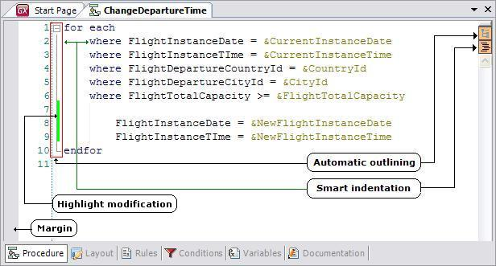
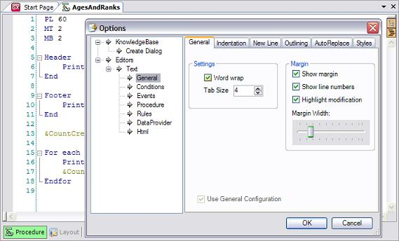

The Source Code Editor is used while editing Transaction rules, Procedure or Data Provider source, Events, etc.

Sample Source Code Editor view
There are many features that can be configured at the user level:
-
Tab size
-
Margins
-
Word wrap
-
Smart Indentation
It can be enabled or disabled. When enabled, source code may be automatically indented when opened and you can choose what "code blocks" to indent.
-
Decide whether specific commands (like if, else, etc.) should be in a single line or mixed in with other commands in the same line
-
Outlining
Code blocks (code between For Each/Endfor, If/Endif, etc.) may be automatically outlined so that it can be shrunk to a single line to allow for easier code reading.
Sets shortcuts to commonly used text strings or autocorrections for common mistakes.
You can even set different configurations for every part (i.e. one for rules, another one for conditions, etc.) by checking or clearing the Use General Configuration checkbox in each part.
-
Editor for Events, Rules and Source have many features that make it more user-friendly:
-
If you type in ‘&’ (ampersand) then a combo box is immediately displayed with all the variables that have been defined for the particular object being edited, without the need to paste them.
-
If an attribute or any form or layout control is followed by a ‘.’ (dot) then a list is displayed with possible properties and methods from a combo box that can be used by the particular attribute being edited.
-
When you type in ‘(’ (opening bracket) after a standard method or function, a tooltip appears indicating the required parameters and their data type.
-
Highlighting several lines (they can be highlighted with the left bar) and then selecting tab, indents those lines to the right; shift+tab, however, indents them to the left.
-
Highlighting one or more lines (they can by highlighted with the left bar) and then pressing Ctrl+Q will comment the entire block. Pressing Ctrl+Shift+Q removes the two backslashes used for commenting from the highlighted block. See Comments in GeneXus for further information.
There is more at GeneXus IDE/Shortcuts

Sample Source Code Editor configuration view
The editor is based on Actipro SyntaxEditor http://www.actiprosoftware.com/products/dotnet/windowsforms/syntaxeditor/default.aspx
See also
Comments in GeneXus
|